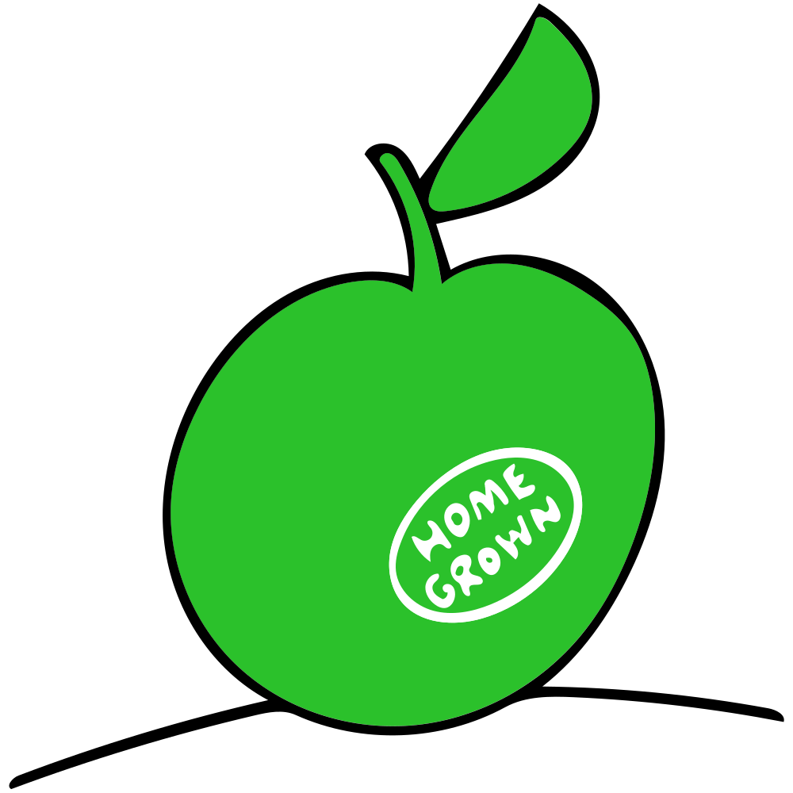

Main characteristics: Person-centred, progressive, localism, collaborative, creative, motivated, hope, shared values, open-minded, sense of belonging, participatory, self- motivated, personal responsibility, citizenship. Community-based, holistic, assets based, non-judgemental, mutual respect, proactive, flexible, adaptable services, positive ageing, resilient, collaborative learning, cross sector.
In 2025 Scotland is no longer reliant only on oil and whisky for its wealth now that it is harnessing the priceless assets of its people.
Citizens, service providers and the state have found their proper roles and responsibilities and social cohesion is strong. An ageing population has led to a critical mass of people recognising that everyone requires support and care at some point in life.
There is no stigma in receiving support services. It's the new normal. ‘Social Services’ is not a term that is recognised or used in the same way it was a decade ago.
Today people with disabilities and chronic conditions and many with mental health issues are fully integrated into society.
Most do not require any formal support. They earn, learn, care, contribute, participate and volunteer like everyone else and they buy support services as and when they need them.
Community empowerment and land reform legislation have provided a major catalyst for grass roots activism and participation. Across the country, communities now own buildings and land once the property of the state. This has led to a widespread increase in ‘common good’ facilities.
Many families are taking advantage of the substantial and ever growing number of allotments to produce their own fruit and vegetables.
In urban and rural areas, community groups - particularly those based in less affluent parts of the country - have developed a national reputation for making a difference to the lives of those who felt marginalised, disenfranchised and forgotten by the state, professions and society.
Innovative support schemes such as the German inspired Grandparent Service, which gives older people the opportunity to ‘adopt’ children raised in single households, have proven popular and effective, despite concerns from some critics regarding the issue of child protection.
Community trusts set up in response to public demand offer a range of services from support and activities for the elderly to youth centres run by teenagers and nurseries. Many have taken over council facilities and set up trading subsidiaries to employ local people to run centres which offer restaurants, conference centres and community theatres.
The government, keen to reduce dependency on the state, has recognised the work of these groups with the introduction of new national award schemes and a small prize fund to celebrate and encourage a more DIY approach as it continues with its public sector reforms.
One of this year's winners, Time, Space and Tools (TST) in the east end of Glasgow, an organisation which teaches traditional Scottish skills such as weaving and playing the bagpipes, is using its £10,000 prize money to fund a new stone masonry course.
This bottom-up approach has driven a culture of collaboration between citizens, local and central government and health and social care professionals. They now work together to provide joint solutions to address the growing pressures of Scotland's rapidly ageing population, its ever-shrinking finances and society's growing expectations of choice.
Community Improvement Coalitions are the ‘engine room’ of change and innovation. CICs bring together individuals from the community, the voluntary sector and social enterprise as well as representatives from business, health and social care.
With representation from the police and fire service these inclusive groups make key spending decisions. They are the shapers and makers of local services and all have their own social justice charters which are drawn up by members of the local community.
These groups host regular social debates and speed dating style ideas exchanges to create solutions to local problems and improve life in the community.
Universities are collaborating with health and social services to narrow the gap between learning and practice. Heads of faculties meet regularly with practitioners and service heads to exchange success stories, emerging issues and developments in best practice to improve the way services operate on the ground.
Healthy living and ageing centres, pre-birth parenting programmes and employability schemes targeting people with disabilities, mental health problems, learning difficulties and addictions are among the many initiatives improving health and reducing inequalities.
The Dundee CIC has reported a threefold increase in people over 60 undertaking regular exercise while in Glasgow a community safety initiative with Glasgow Housing Association has resulted in a 50% drop in house fires and a 30% reduction in the fear of crime. Initiatives like these are significantly reducing inequalities in Scotland's most deprived areas.
Over the past four years more than 100 people with a history of alcohol and drug misuse have secured jobs in social care as addiction workers following training provided by the Lothians Trainspotting Project which works in conjunction with NHS Scotland. In her evaluation report, programme coordinator Ruth Sanderson, said: “This is life changing stuff for the individuals and families, particularly those with children. They can live healthier, more independent lives. This initiative is having an enormous positive impact on all their futures.” (Quote in speech bubble)
Today in 2025 Scotland is recognised internationally as a beacon of innovation and an iterative approach is being taken to ensure schemes offer value for money and are sustainable when scaled up and rolled out. In Aberdeen and Inverness, holistic health centres “owned” and run by the local community are being piloted, financed by a grant from the European Regional Development Fund.
Based on the Alaskan Nuka system of healthcare, which is built around the the value of shared responsibility, the two centres provide specialists such as behaviourists and acupuncturists as well as mainstream health care workers who offer relationship focused care and same day access.
All aspects of the care system are designed by the patient-owners who make up 55% of the workforce and the entire board of directors. The not-for-profit Life centres, which opened two years ago, have informal collaboration zones and flexible talking rooms.
Satisfaction rates among patients and staff are nearly 100%, according to Life Aberdeen's latest customer survey and these projects have won praise from the King's Fund as an ‘exciting and promising’ model. Those sceptical of the scheme, however, have raised concern about the long term costs of such centres and the potential for in-fighting and leadership issues.
People Powered Care is driving the new agenda, underpinned by a slew of enlightened government policies. The new living wage – currently £10 an hour - has dramatically reduced in-work poverty while new apprenticeship schemes and incentives for businesses have led to higher employment rates, particularly among the women, the ‘young’ old and the disabled.
Latest figures from the Office for National Statistics show unemployment is at its lowest level for ten years while the number of people working beyond retirement age has doubled since 2020.
 The increase in lifelong learning programmes has led to a highly skilled older workforce. Most people under the age of 75 are engaged in some form of community activity with many contributing their time, energy and assets as coaches or volunteers for local groups based around their interest, skills and knowledge. A dramatic rise in participation over the past five years has resulted in volunteering becoming a way of life.
The increase in lifelong learning programmes has led to a highly skilled older workforce. Most people under the age of 75 are engaged in some form of community activity with many contributing their time, energy and assets as coaches or volunteers for local groups based around their interest, skills and knowledge. A dramatic rise in participation over the past five years has resulted in volunteering becoming a way of life.
The government is reversing years of under investment in housing. A major expansion in the creation of affordable housing stock is under way, with the emphasis on co-housing projects for the rental market.
New Scandinavian style apartment blocks with communal facilities on the ground floor and basement and a communal roof patio or communal decked garden area are becoming a common sight around Scotland. They are proving popular particularly with single parents and retired people with limited incomes.
Following the welcome abolition seven years ago of the controversial bedroom tax which cut the amount of benefit council and housing association tenants received if they were considered to have a spare bedroom, the government has introduced new laws to tackle the inadequate supply of housing for people with disabilities. This will ensure that half of new housing is adaptable or suitable for those with limited mobility.
A new social security allowance (SSA) - linked to the cost of living - has been drawn up by the Social Security Partnership for Scotland, the body consisting of representation from voluntary organisations, trade unions and businesses. Under the scheme carers receive the same amount as job seekers.
Eligibility criteria have been tightened as a result of cost cutting measure. Only the most vulnerable and those with complex needs receive state-funded support but what they receive is tailored.
Flexible personal budgets have enabled people to move away from traditional services and, while some people mix and match their care with local authority and private services, many choose to hire self-employed personal assistants (PAs) who help them with daily tasks.
While it was initially a steep learning curve for some people, who were unused to making suggestions and decisions, they are benefiting from having more control over their lives.
The system is also benefiting self-directed support programmes: long-term health conditions have slashed the number of GP visits and hospital admissions while multi-tasking hybrid workers and kinship carers are reducing the workload and pressure on both staff and dwindling budgets.
Public sector reform and the integration of health and social care, has resulted in a slimmed down, more flexible and mobile state-funded social care workforce.
Much of the work has been outsourced but those who remain are highly qualified and are all registered with the Scottish Social Services Council (SSSC), which has set new quality standards based on a human rights agenda drawn up in collaboration with people who access support. ‘Secret shopper’ surveys are carried out regularly as are unannounced inspections.
The SSSC has raised minimum qualifications for all care staff and training is now heavily focused on personal leadership and outcomes. Service users are also heavily involved in designing training programmes and, following their own training, a number also deliver some teaching modules.
There are now only 18 directors of social work who play a strategic role across local authorities, a move that has been criticised by Social Work Scotland who fear that the increased pressures and lack of opportunities for promotion by younger staff may affect recruitment and deter people from entering the profession.
Social workers are known for facilitating and commissioning, rather than working directly with specific individuals or families and, as such, spend much of their time in community settings.
Decisions on what services people access are often made in collaboration with the individual's family or a voluntary organisation acting as an advocate, with no pressure on time unlike the old system of timed 10, 15 or 30 minute slots.
There has been a sea change in culture across both health and social services which are much more integrated. Cross-agency secondments, job shadowing, rotational programmes and mentoring for all NHS and social services staff is standard practice. Pay inequality across the public, private and third sector has all but been eradicated.
Despite the previous reservations of the National Review of the Early Years and Childcare Workforce, moves are afoot to determine national pay and conditions for staff from social work directors to practitioners and support workers. There is a willingness to take calculated risks and give new give things a try.
Suggestions from staff for improvements to services are not only welcomed but positively encouraged through local ‘Bright Sparks’ initiatives. Heads of department, who can be contacted at any time by phone or email, hold monthly meetings with all staff to celebrate achievements and keep staff in the loop about upcoming plans and developments.
The new supportive climate has resulted not only in more productive and engaged staff but also in higher retention and lower sickness levels. However, some have found the transition easier than others, despite a raft of leadership seminars and new courses to prepare staff at all levels.
Some senior social work staff have been resistant to the introduction of new hybrid health and social care trained social workers and in some areas where leadership is weak, the power shift from managers to front-line staff is happening more slowly.
New self-employed personal assistants have taken over much of the work carried out in the past by social care workers. Their numbers have risen four fold since 2014, to 20,000.
PAs work on individual contracts, usually juggling at least one other job and do anything from shopping and cleaning to taking their employers to a range of activities and events. A number of spin-off businesses have emerged, including pay roll companies and training and recruitment agencies. The market place is less stable for providers and their employees as more players enter the fray.
Commissioners now set budgets in advance of inviting tenders, applying the same best value and quality criteria in all cases. While micro providers, social enterprise and third sector organisations have given power back to communities, some private companies, including the much diminished care homes sector, are feeling the squeeze.
Teamwork and collaboration are the cornerstones of the modern health and social care service in Scotland. A large proportion of the sprawling ‘Super’ hospitals of the 20th century, now seen and referred to as “disease palaces, have been closed as have day care centres. The latter have been replaced by peer support groups such as Neighbourhood Networks.
A much wider range of minor surgical procedures now take place within GP surgeries. People book appointments with their family doctors online but pharmacies provide much of the day-to-day advice and information. The emphasis is on prevention rather than cure.
Almost all hospital procedures are carried out as day cases with on-going support provided in the community by a new breed of generic health and social care workers (HESOS), who provide holistic care, mostly to older people with complex needs.
HESOS provide welcome packages, ensuring the house is clean and tidy, food is in the fridge and that the right medication is provided. General duties range from wound dressing and administering medicine to help with personal care, shopping and social activities.
In most parts of Scotland this works well but in some regions, most noticeably rural locations, there have been complaints from HESOS - who can be employed by local authorities, the NHS or private companies - about a lack of training and wide variations in pay and conditions.
New research has highlighted the effectiveness of local area co-ordinators (LACs) who work with communities as well as individuals to help design and commission more responsive joined-up services and plug people into social networks and local projects that increase their community involvement.
According to the study carried out by Queen Margaret University, co-ordinators, who include former social workers, nurses, occupational therapists or community development workers, have had a ‘significant positive impact’ on the lives of those who use support services, reducing their need for health services.
The authors, noted, however, that ‘coverage is patchy’ as there is no requirement for local authorities to provide LACs and eligibility thresholds differ across the councils that do provide them.
Technology is improving many aspects of people's lives and health and has led to huge advances in treatment and more efficient provision of health and social care. Today some third sector groups in rural areas are using video to reach more isolated citizens rather than having support workers and counsellors drive miles across their region.
Many people use their smart phones and tablet devices to monitor their cholesterol and weight levels and follow healthy lifestyle programmes. New domestic devices such as ovens that switch off when left unattended for too long, are making homes safer.
One area where progress has not been made is in data sharing across health and social care mostly due to lack of confidence in IT systems following a number of high profile failures.
Social media is the key tool for keeping in touch for the young and old who are digitally literate thanks to the many life-long learning courses available in local schools and colleges.
Volunteers and development workers also work hard to ensure technophobic service users can navigate the web and use social media to make the most of local support and opportunities,
However, those who have steadfastly refused to embrace the technology revolution and those in financial hardship 2025 can feel isolated in a world where television is the main focal point of their life.
It is these people who usually need support services most and often end up in accident and emergency after a crisis.
Lisa’s Story
Lisa, 40, has been a social worker for 15 years and has just returned from a six-week best practice work exchange in Sweden. She is currently working towards a PhD in community health and youth work and is a mentor to five students.
The new culture of empowerment and closer working with colleagues in health has reinvigorated her and her career. She now has far more autonomy over her case load, more contact with service users and fewer meetings, all of which has resulted in less paperwork.
Her new boss, with whom she has a working lunch once a month, is very supportive. Lisa is one of the professional leads in the Highland Community Improvement Coalition which has been applauded for its work in achieving a 100% record in finding foster homes for local children.
Under the scheme parents in their 50s and 60s are successfully being encouraged to use their experience and spare time to become home makers again, which means looked after children no longer have to be sent to homes out of the region and away from their wider family, friends and local community.
Lisa’s husband Ian, a manager at the local oatcake factory, has type 1 diabetes which he manages well through a good diet and regular exercise in addition to daily insulin injections. He uses an app on his tablet device to keep records of his blood glucose levels and texts any abnormalities to his pharmacist. He rarely needs to see a doctor.
The couple live in a new village, near Inverness, in the same co-housing scheme as Lisa’s parents. Both in their 60s, they provide childcare for their two grand children Colleen, 10 and Ruth, 8, when Lisa and Ian are at work.
The siblings go to the local primary school which runs heavily subsided evening classes most of which are free to the over 50s. The children both benefit from the government's universal free school meals policy as well as free swimming at their local municipal pool, an initiative led by the Highland Community Improvement Coalition.
Colleen and Ruth enjoy spending time with their grandparents who are keen runners and ramblers. The sexagenarians have encouraged their grandchildren to join the local running club where they coach junior members.
The pair, who both work part-time, often take the girls out on walks usually bringing along their metal detector, one of their many hobbies. Lisa’s sister, Alison, who has recently split from her husband, has started a new career as a self-employed personal assistant in Oban working for a disabled musician in his 50s.
She works for 18 hours a week for £12 an hour, £2 above the living wage. While she has no formal contract they get on well together. If the job goes well Alison is hoping to get more hours and perhaps even add a second client to her books.